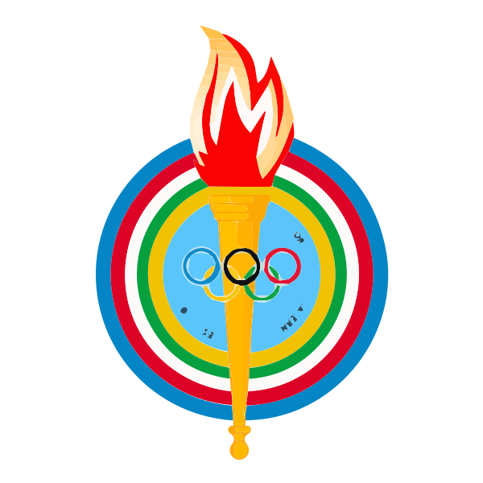
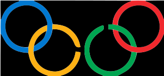
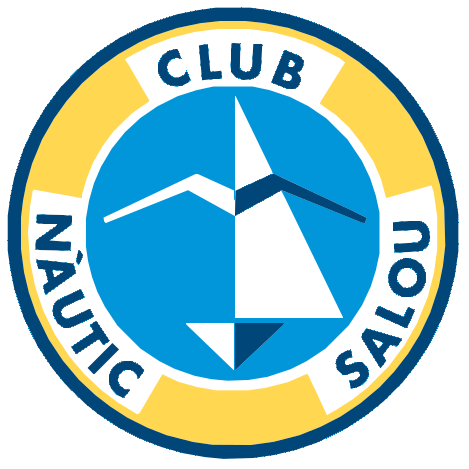
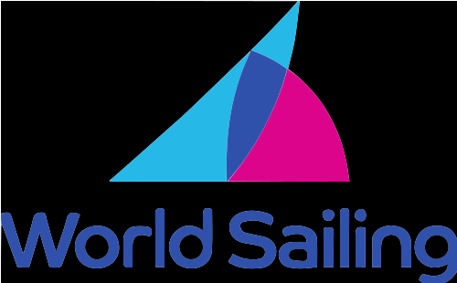
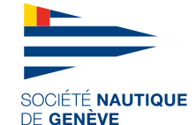
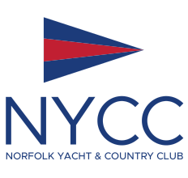

Professional Timeline
A career shaped by Olympic competition, international coaching, and the long-term development of competitive sailing programs.
Optimist Racing
Cerutti began sailing in the Optimist class during her childhood, developing the technical foundations and competitive mindset that launched her racing career.
Europa Class Competition
Transitioned to the Europa class, the women's Olympic single-handed dinghy of that era, competing internationally and establishing herself within Olympic class racing circuits.

Pan American Games Bronze Medal
Won bronze in the Women's Laser Radial event at the Pan American Games, marking a major milestone in her international competitive career.

Olympic Games – Beijing
Competed in the Laser Radial class at the Beijing 2008 Olympic Games, becoming the first Paraguayan woman to compete in Olympic sailing.

Head Coach – Club Nàutic Salou
Began her international coaching career in Spain, coaching youth sailors and competitive Laser fleets while building experience in structured European sailing programs.

World Sailing Emerging Nations Program
Worked with the World Sailing Emerging Nations Program supporting the development of sailors and national federations from emerging sailing countries.

Laser Coach – Société Nautique de Genève
Joined one of Europe's strongest sailing clubs, coaching Laser sailors within a competitive Swiss high-performance environment.

Laser Coach – Catalan Sailing Federation
Worked within the Catalan high-performance sailing structure supporting youth Laser sailors competing nationally and internationally.
Youth Laser National Coach – Swiss Sailing
Supported youth athletes within the Swiss national Laser development pathway, preparing sailors progressing toward elite international competition.
Single-Handed Program Director – Chicago Yacht Club
Led the development of competitive single-handed sailing programs combining athlete coaching, coach mentoring, and structured program leadership.
Team Leader - U.S. National Team USODA
Selected as U.S. Team Leader with USODA at the Optimist World Championship, overseeing athlete preparation and team operations in a high-performance environment. Led the U.S. Team to a silver medal (2nd place) finish in Thessaloniki, Greece.
Olympic Campaign Coaching – Paris 2024 Cycle
Worked within the Olympic campaign environment of ILCA 6 sailor Dolores Moreira during the Paris Olympic cycle.

Head Coach & Assistant Sailing Director – Norfolk Yacht & Country Club
Leads youth racing programs and contributes to the development of competitive sailing structures at one of Coastal Virginia’s leading yacht clubs.
Coaching & Program Leadership
Cerutti’s work extends beyond traditional coaching roles. Throughout her career she has contributed to the development and leadership of sailing programs by combining technical coaching, athlete mentorship, and strategic program planning.
- High-performance athlete coaching and race preparation
- Youth development pathways and competitive team progression
- Coach education and mentorship
- Training, clinic, and regatta schedule design
- Staff supervision and coaching team coordination
- Fleet oversight, logistics, and operational planning
- Safety systems and long-term program structure
Leadership Focus
Her responsibilities across different organizations have included designing training structures, supporting competitive pathways for young sailors, mentoring coaching staff, and strengthening team environments that promote discipline, resilience, and performance.
This integrated approach has allowed her to contribute not only to individual athlete success but also to the long-term sustainability and growth of competitive sailing programs.
Athlete & Program Development
Cerutti has played an important role in the development and leadership of competitive sailing programs, combining high-performance coaching with long-term athlete development strategies.
Her work has included designing training structures, expanding youth racing programs, supporting athlete progression pathways, and strengthening competitive culture within club and federation environments.
In addition to athlete coaching, she has contributed to the education and mentorship of sailing coaches, sharing technical knowledge and training methodologies to improve consistency across coaching teams.
This combined focus on athlete development and coach education has helped build stronger sailing programs and sustainable pathways for competitive sailors.
Areas of Focus
- Athlete development pathways
- Youth racing team growth
- Coach education and mentorship
- High-performance training structures
- Competitive program design
- Long-term program sustainability
Certifications & Professional Education
Professional development has remained an important part of Cerutti’s career, complementing her experience as an Olympian, international coach, and sailing program leader.
Professional Sport Management
International Olympic Committee (IOC)
Issued 2023
Beijing 2008 Laser Radial Olympics Participant
International Olympic Committee (IOC)
Issued 2008
Additional Professional Education
Includes safety, anti-doping, athlete welfare, and sport-related training completed during her coaching career in Europe.
Global Coaching Footprint
Cerutti’s international framework extends across clubs, federations, teams, clinics, camps, regattas, and athlete development environments in multiple regions of the world.
Athletic Representation
- Argentina
- Paraguay
International Coaching & Professional Work
Countries connected to coaching, camps, training environments, federations, athlete support, and program work.
Visual Archive
A visual record of Olympic campaigns, international coaching environments, athlete development, media coverage, and current leadership.
Beijing 2008 & Racing Career
Press clippings, campaign images, Olympic participation, and competitive milestones.
Paris 2024 Cycle
Images and materials linked to Olympic coaching work in the ILCA 6 class.
Teams & Programs
International athletes, national federations, clubs, and development environments.
On the Water
Coach boat support, technical work, race coaching, and athlete supervision.
Articles & Coverage
Magazine features, online press, interviews, and public coverage across different stages of her career.
Early Sailing Roots

Cerutti grew up closely connected to the sailing world through her family.
Her mother, originally from Paraguay, played an important role in shaping that connection from an early age.
A family photograph shows Cerutti as a baby sitting in a Laser dinghy together with her mother, a symbolic image that reflects how deeply sailing has been part of her life from the very beginning.
Public References & Records
The following public references support key parts of Florencia Cerutti’s athletic and professional background.
Official Athlete Databases
Sailing Organizations
Professional Profiles
Professional Contact
For coaching opportunities, collaborations, speaking engagements, or professional inquiries related to Florencia Cerutti, please get in touch.
Email: coachflorc@gmail.com
LinkedIn: flor-cerutti-sailing-coach